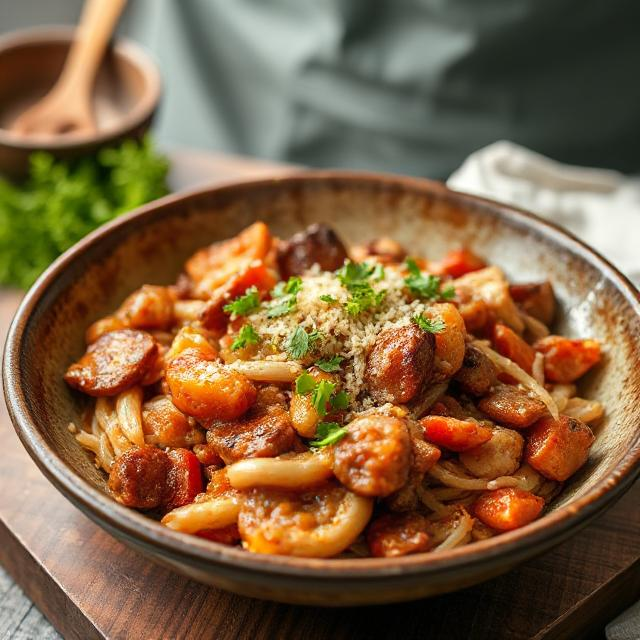

About the cook

Hi, I'm Abdulmalik. I'll always remember the weekends my family does a mini-cooking competition with almost everyone in the neighbourhood.
We would all gather at my house, and my mum would be the judge. I always looked forward to those weekends because it was a chance to showcase my culinary skills and bond with my family and friends over delicious food.
I started this site because i love cooking and sharing my recipes with others. I believe that food has the power to bring people together and create lasting memories. Through this website, I hope to inspire others to explore their own culinary creativity and discover the joy of cooking.
My favourite dish
Mini-cooking contest

A pic of I and my grandma
My Cooking Philosophy
Cooking is all about experimenting and having fun. Don't be afraid to try new things and make mistakes - that's how you learn and grow as a cook.
I believe the best ingredients are the ones already in your pantry.
To me, a great meal isn't about being fancy; it's about sharing laughs with family and friends, and also helps comfort me after a long day.
In my kitchen, one rule I always follow is never be afraid to experiment.